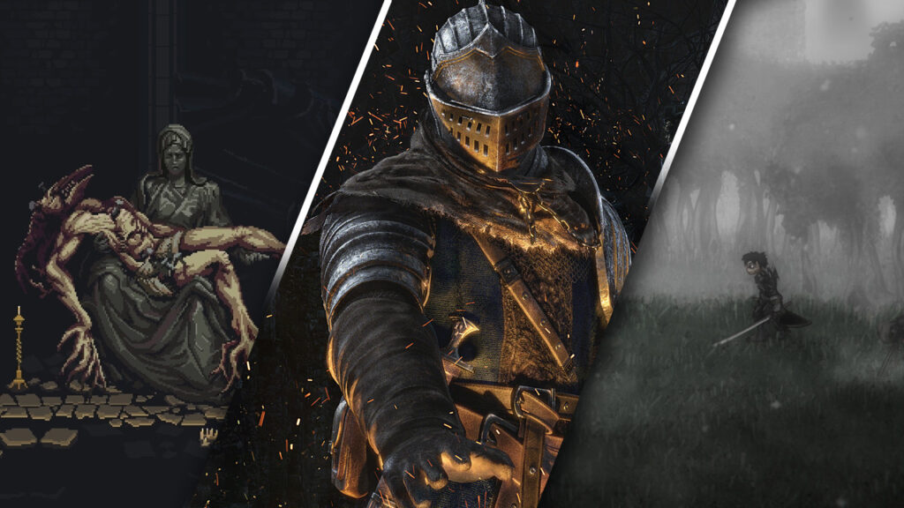

Bloodborne

Darksiders

Dark Souls

Death's Door
Soulslike video games are a relatively new sub-genre born due to popularity of the Souls series. Soulslike games generally have common elements like high difficulty, high-risk combat with hard-hitting enemies, sparse checkpoints, and enemies dropping souls (or some other resource used for upgrading stats and/or weapons that is lost upon death), but the player has one chance to regain the dropped souls if they can reach the place of their death without dying again.
The Soulslike genre originates from Japan. The Soulslike template was defined by From Software's Hidetaka Miyazaki, with his Souls series, while Capcom's earlier Monster Hunter series also contributed to the formula. The genre was primarily inspired by classic Japanese video games, combining elements from the action RPG, Metroidvania, survival horror, hack & slash and fighting game genres.
The definition of the Soulslike genre includes the following criteria:
Soulslikes may also include a narrative structure where the narrative elements are presented as a jumbled, mismatched puzzle, missing many pieces.
